点睛阅读，让重点自己浮出来
基础版离线标出词语与重点词，读长文不迷路；智能版用 AI 点出要句、概念和注释，复习时用章节要义和全书脉络找回重点。
- 中文分词与重点词完全离线
- 浓度可调，手机与电脑一致
- 章节要义、全书脉络、速读
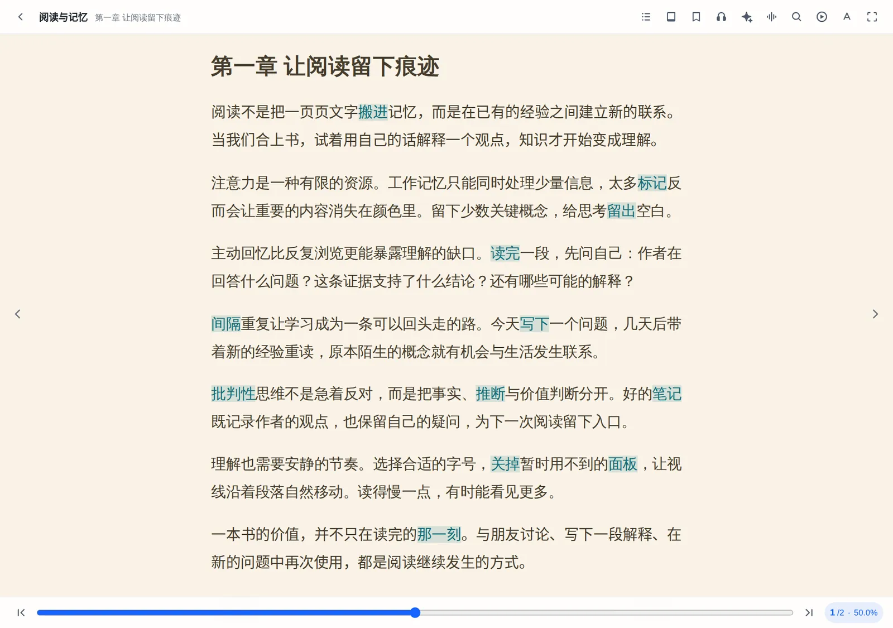
轻阅是一款全格式电子书与 PDF 阅读器。点睛阅读帮你抓住重点，听书、打字机、歌词等模式陪你读完，划线可以一键导出、做成金句卡片。不需要账号，书和笔记留在你自己的设备上。
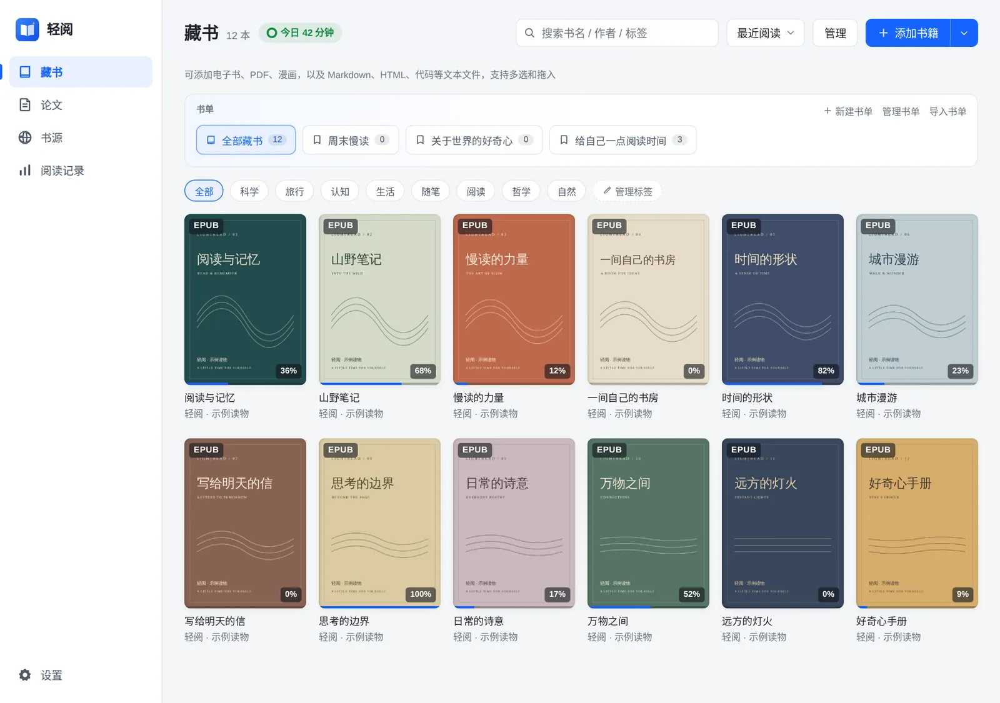
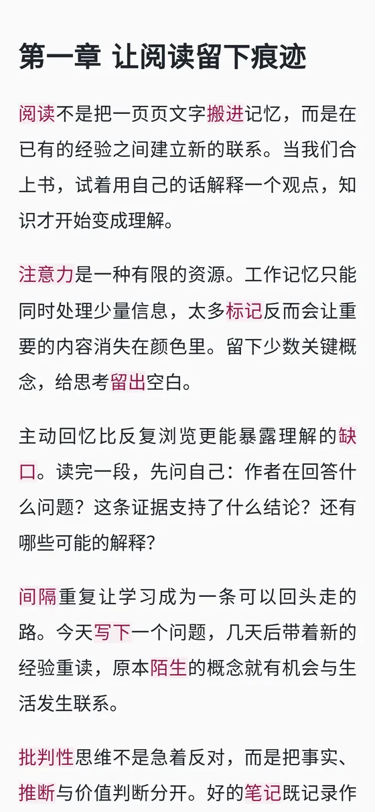
每个功能都为「读完、读懂、记住」服务，不堆砌，不打扰。
基础版离线标出词语与重点词，读长文不迷路；智能版用 AI 点出要句、概念和注释，复习时用章节要义和全书脉络找回重点。

划线和想法按章节、按书中顺序整理好。一键复制全部，或导出 Markdown、纯文本、JSON、CSV，直接放进 Obsidian、Notion、Readwise。喜欢的一句，做成金句卡片发给朋友。
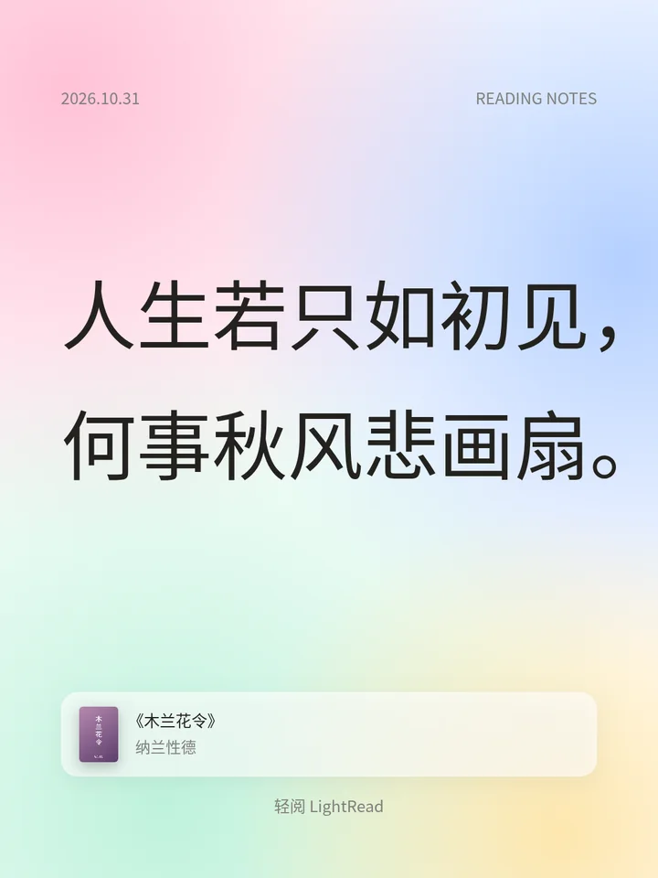
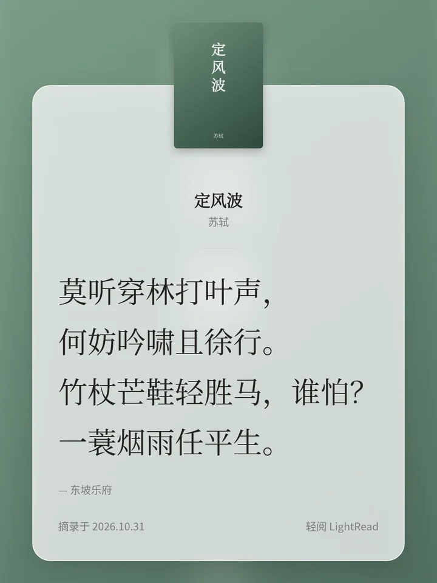
原文在左，译文在右。划词翻译、逐页版式对照，边读边标注；桌面端还能用 BabelDOC 生成中文或双语 PDF，用论文 Agent 追问论点、方法和证据。
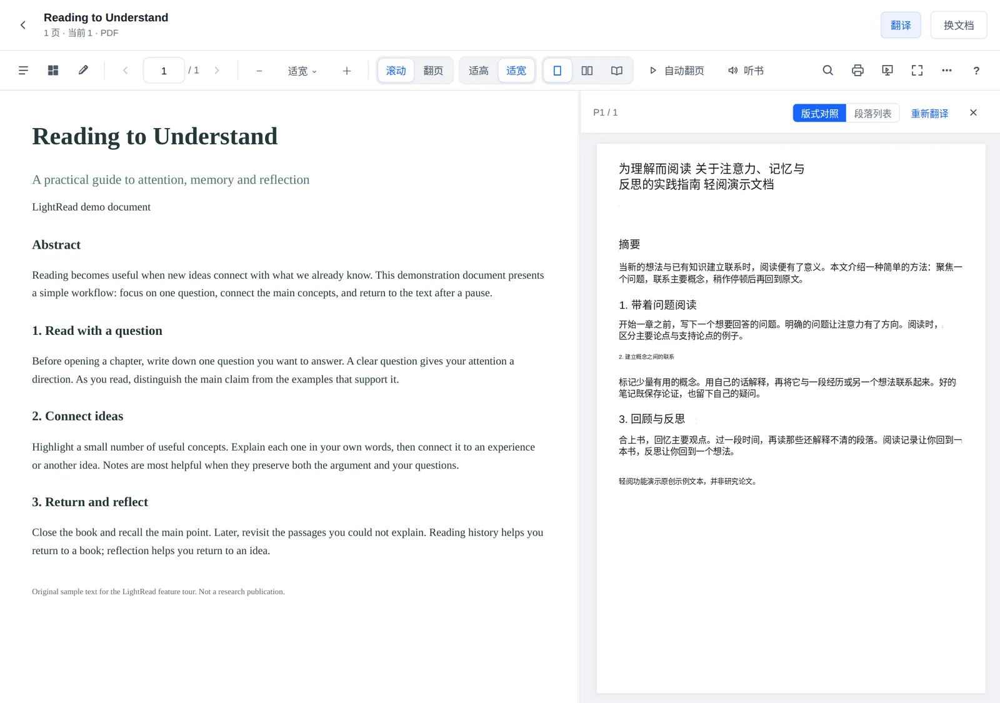
打字机一字一字出现，歌词一行一行亮起，自动翻页与匀速滚动解放双手。夜读、护眼、墨水屏、大字、沉浸五种场景一键切换。
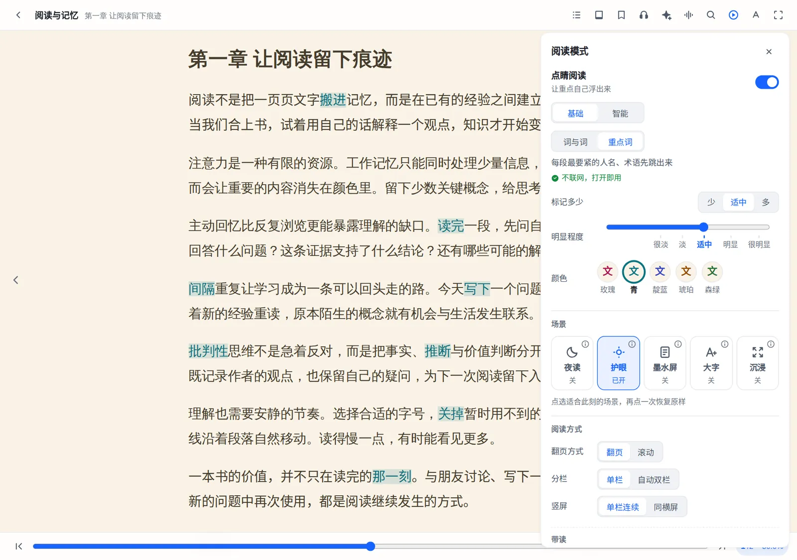
自然的在线语音、可下载的离线模型和系统语音任选。正文随朗读高亮跟随，定时关闭、语速学习、剩余时长一目了然。
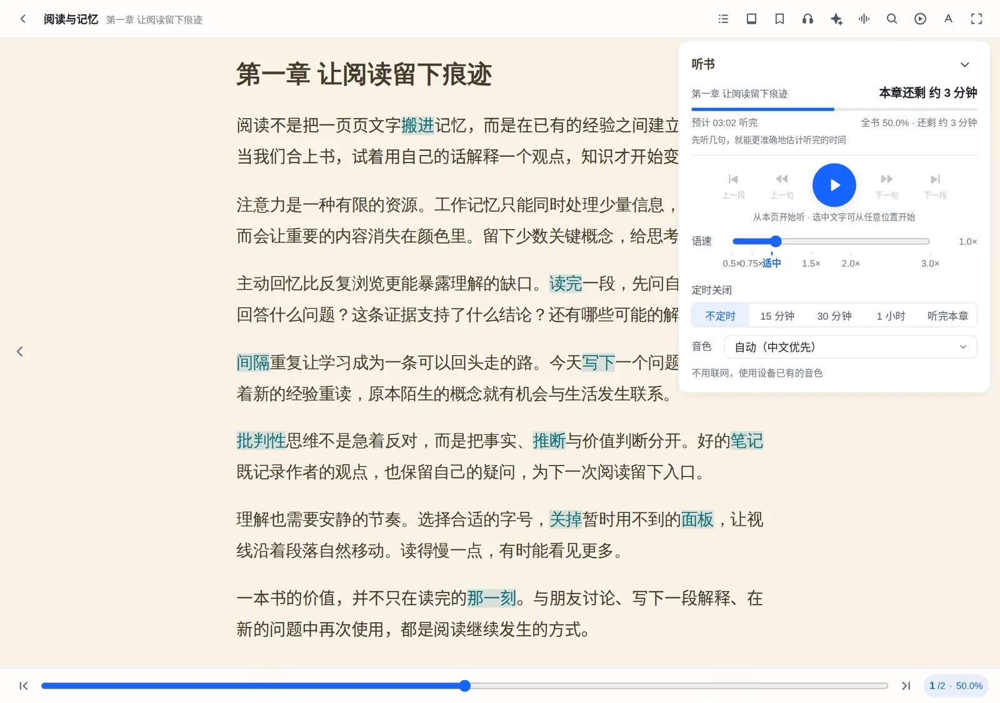
把想读的书收进书单，到手的书自动归入；获奖书单开箱即用。古登堡计划、Internet Archive、arXiv、自建 OPDS 书库，统一搜索、一键入库。
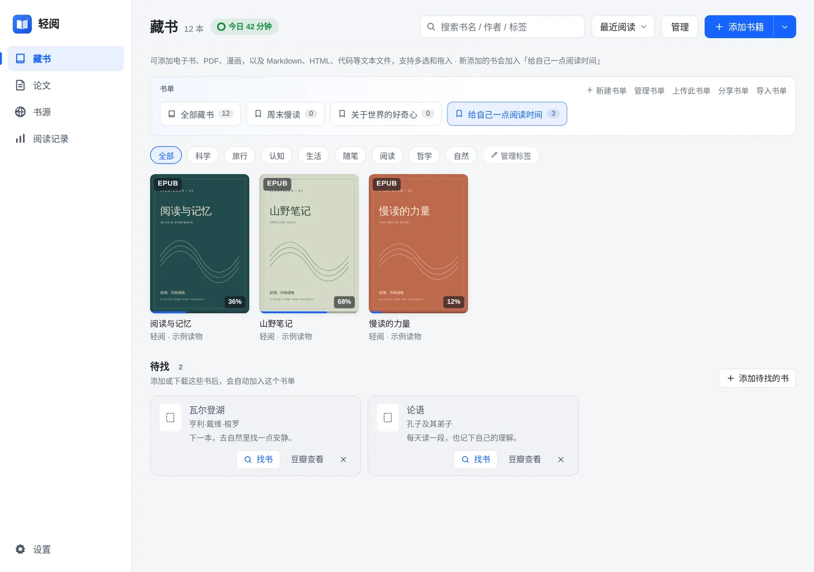
今日目标、连续天数、每周达标和时长趋势，自动记录不打扰。换设备也不丢，多端合并统计。
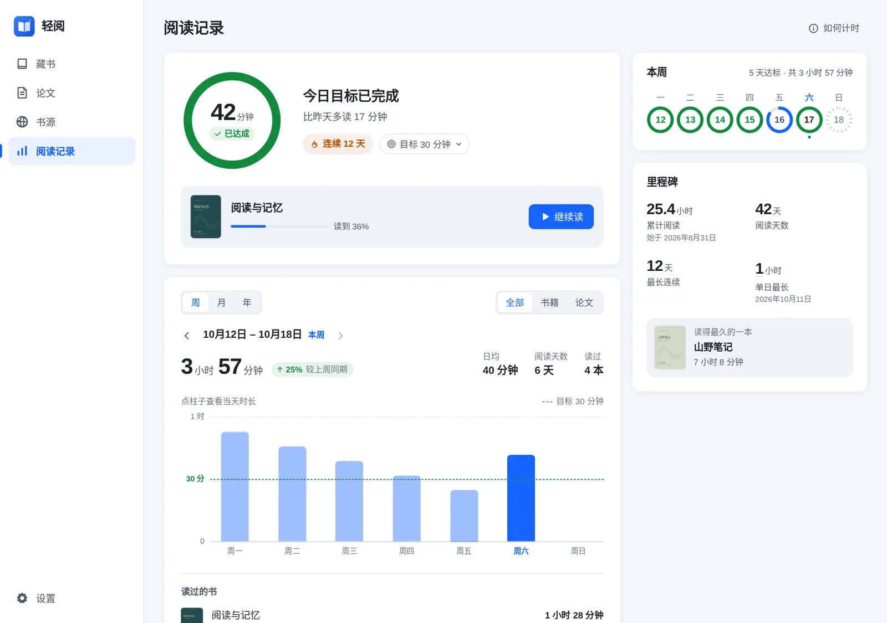
与桌面版共用同一套阅读引擎，界面按手机重做：底部标签栏、单手可达的工具栏、底部抽屉面板。
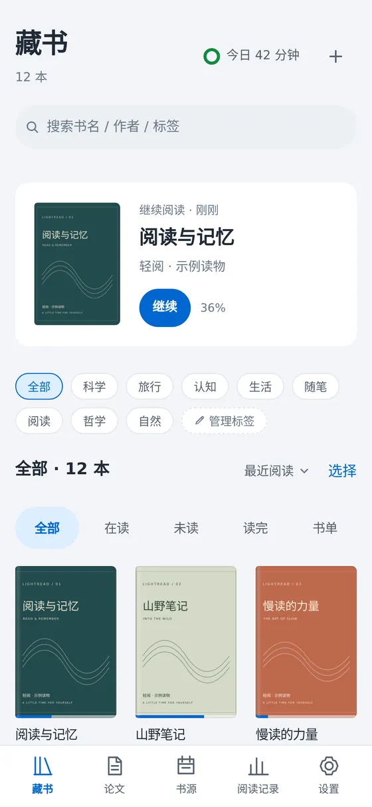
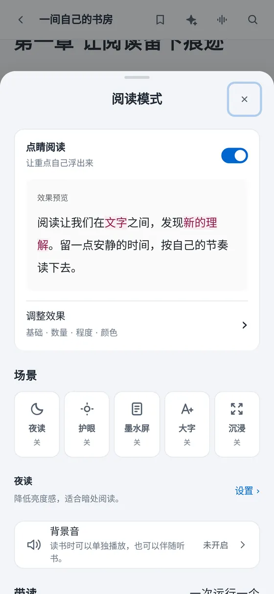
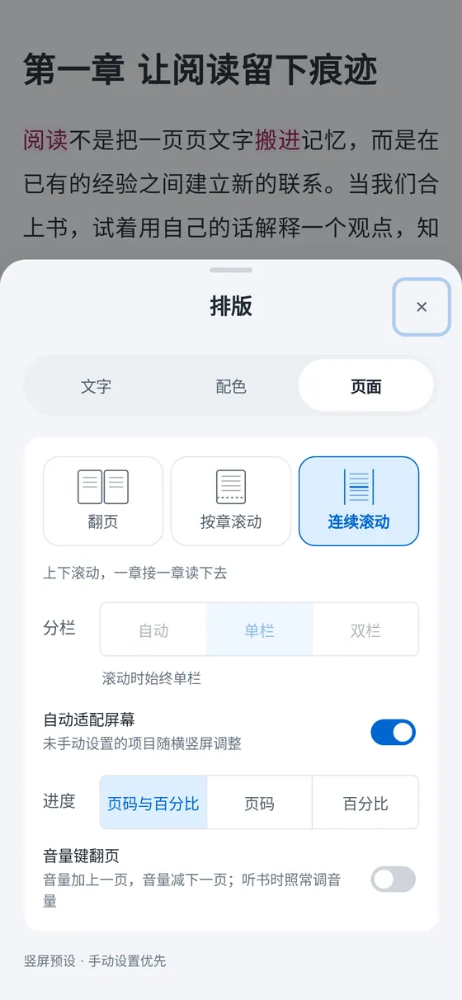
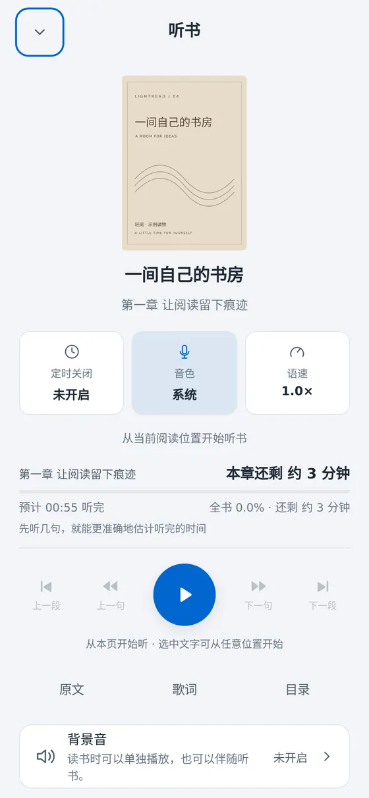
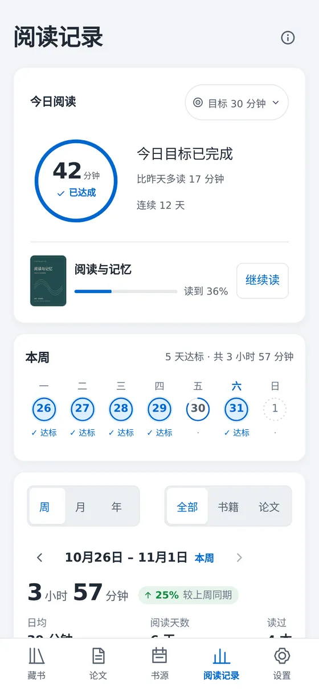
本地阅读不需要账号，不需要联网。藏书、进度、笔记默认只在你的设备上，同步与 AI 都按需开启。
AGPL-3.0 开源，任何人都能查看、构建和改进。没有广告，没有会员墙。
EPUB、PDF、MOBI、AZW3、TXT、漫画、DjVu 都能打开，MOBI / AZW3 / TXT 还能一键转成 EPUB。
桌面版与手机 App 分别发版，均可在应用内检查更新。
国内网络：GitCode 镜像下载 · 所有版本：GitHub Releases · 校验：每个版本附带 SHA256SUMS
完全免费，没有广告和会员。AI 翻译、智能点睛等功能使用你自己配置的模型服务，可能产生服务商费用；也提供试用额度。
不会，除非你开启同步。本地阅读不需要账号；开启轻阅账号或 WebDAV 同步后，进度、笔记、书单等才会在你的设备间同步。单本书可以设为私密，永不离开本机。
可以。阅读器的「笔记」面板底部有「复制全部」和「导出」：纯文本与微信读书「复制全部笔记」同一版式，也能导出 Markdown、JSON 和 Readwise CSV。选中文字或点开划线，还能做成金句卡片。
支持 MOBI、AZW、AZW3。不支持 KFX 格式和 DRM 加密的文件。
能。用轻阅账号（邮箱验证码登录）或自己的 WebDAV，同步阅读进度、划线笔记、书签、书单、阅读记录和设置；书籍文件也可以一起同步。
到 GitHub Issues 提问题或建议，书摘导出就是读者在这里提出后做出来的。